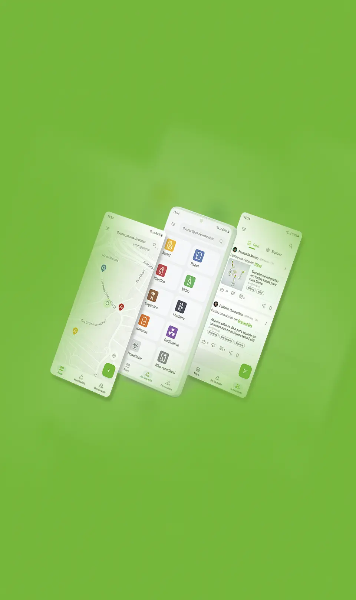
O case em questão trata-se de uma aplicação desenvolvida como projeto final do curso de UI/UX Design da Coderhouse. O projeto visa criar uma experiência de usuário envolvente e funcional para promover a conscientização ambiental e incentivar práticas sustentáveis na gestão de resíduos.
Conscientizar a população sobre a importância da coleta seletiva. Incentivar e facilitar o descarte consciente de lixo.
Falta de conhecimento da população nos impactos de separar ou não separar resíduos residenciais.
A metodologia Double Diamond foi escolhida como a bússola orientadora que direcionou e enriqueceu a nossa jornada. Essa abordagem, amplamente reconhecida e eficaz, se mostrou instrumental para aprofundar a compreensão das necessidades dos usuários e para gerar soluções criativas e impactantes.
O Desk Research foi essencial em nosso processo de pesquisa e desenvolvimento do projeto. Por meio dessa abordagem, obtivemos informações precisas e atualizadas, identificamos oportunidades e desafios, para fundamentar nossas propostas e direcionar as pesquisas de maneira eficaz.
Entendemos com o estudo de caso e a análise de mercado que as teorias apresentadas casam perfeitamente. Entendemos que a população leva como incentivo para a separação de resíduos fatos como: gratificação financeira, descontos, trocas ou algum benefício, mais do que estar em dia com o ambiente sustentável.
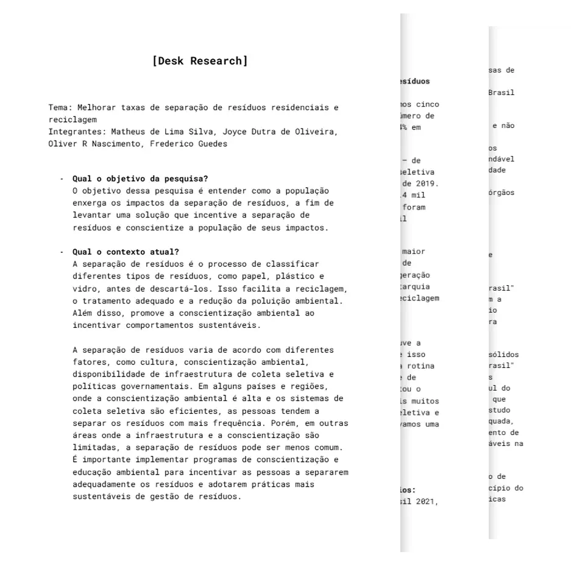
Desk Research desempenhou um papel indispensável na jornada de pesquisa e desenvolvimento do projeto. Através dessa abordagem, fomos capazes de criar uma Matriz CSD sólida e bem embasada, a qual guiou as estratégias e decisões, possibilitando a identificação de causas, soluções e desafios fundamentais no campo de estudo.
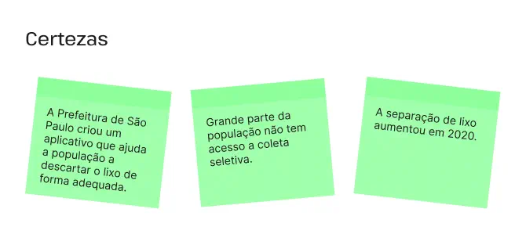
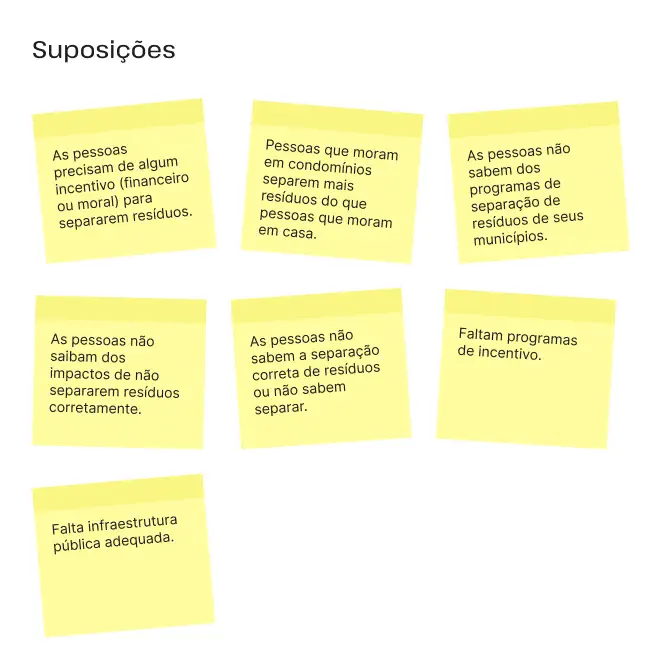
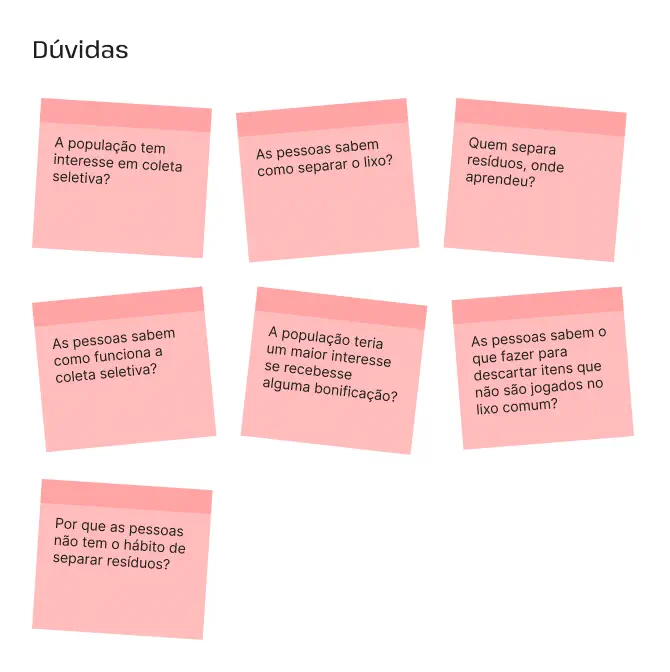
Após a criação da Matriz CSD com base nas pesquisas realizadas durante a etapa de Desk Research, conseguimos reconhecer a importância de aprofundar o entendimento dos temas identificados através de uma pesquisa qualitativa. Com esse propósito, desenvolvemos um roteiro de perguntas cuidadosamente elaborado para orientar as entrevistas e discussões com os participantes da pesquisa.
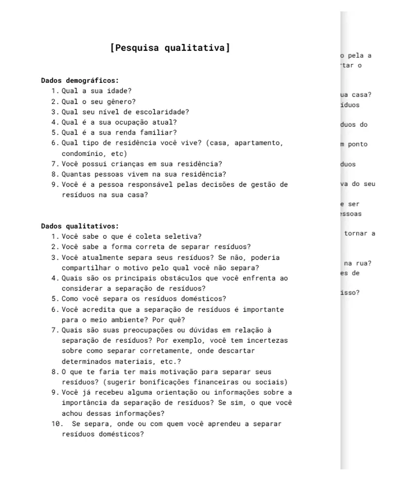
Após a realização da pesquisa qualitativa, empreendemos o
processo de compilar e analisar os dados coletados a fim de obter insights valiosos e conclusões
fundamentadas. A pesquisa qualitativa nos proporcionou uma compreensão aprofundada dos temas
identificados através da Matriz CSD e permitiu capturar as perspectivas, experiências e opiniões dos
participantes de modo significativo.
Para sistematizar e organizar as informações, foi desenvolvida uma Matriz de Análise de Resultados.
Essa matriz foi cuidadosamente elaborada para refletir os elementos-chave da pesquisa,
permitindo-nos visualizar e comparar as respostas obtidas durante as entrevistas e grupos de
discussão.
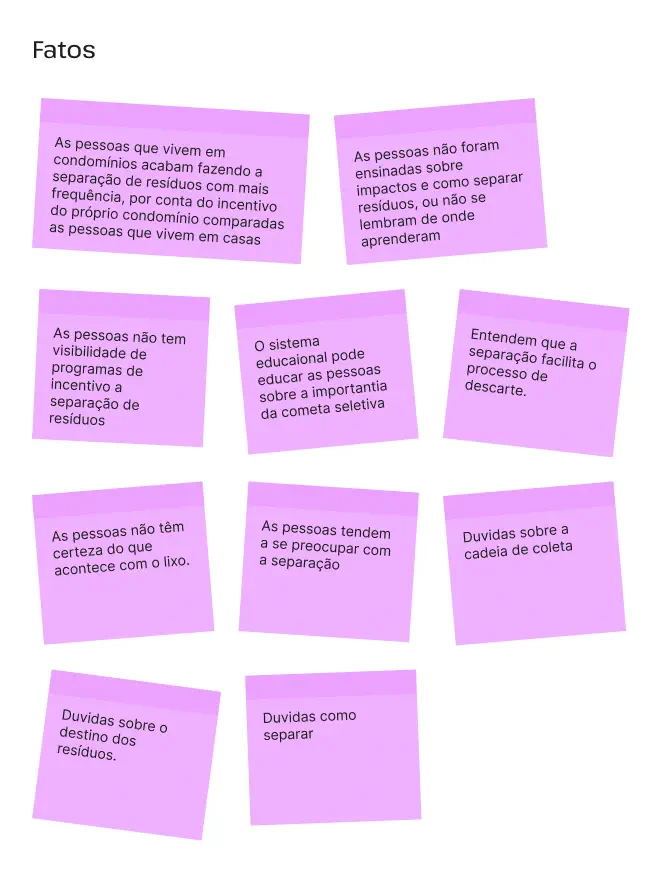
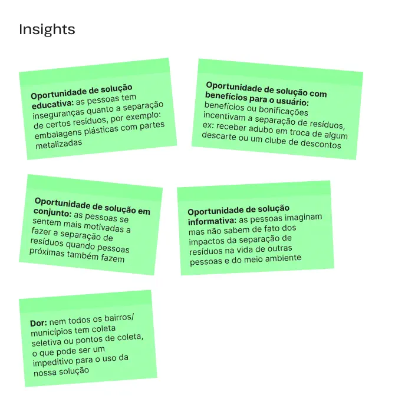
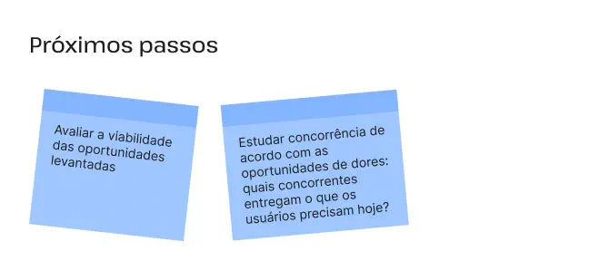
No processo de desenvolvimento, reconhecemos a importância
de compreender o público-alvo com profundidade para garantir que as soluções apresentadas atendessem
às suas necessidades e expectativas. Com esse objetivo em mente, desenvolvemos uma Ficha de Persona,
ferramenta valiosa que permitiu humanizar e visualizar os potenciais usuários de forma empática.
Para dar vida à Persona, a equipe estabeleceu um nome, idade, ocupação, preocupações, motivações,
desafios e objetivos específicos. Além disso, foi incluida uma foto, tornando a persona ainda mais
tangível e fácil de visualizar.
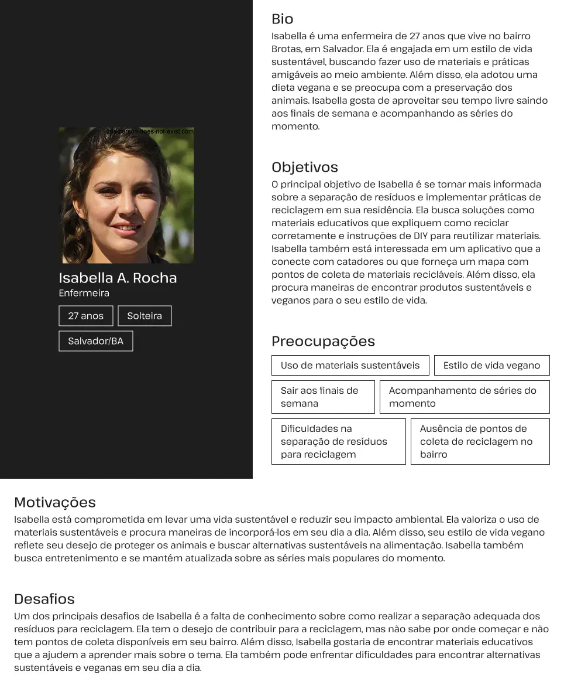
Foram utilizados os dados coletados ao longo da pesquisa para criar uma Taskflow detalhada, visando aprimorar a experiência do usuário de forma estratégica. Essa abordagem permitiu projetar soluções estratégicas para aprimorar a experiência do usuário, tornando-a mais intuitiva, eficiente e agradável.
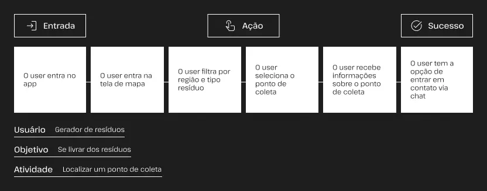
O desenvolvimento do Userflow com base nos dados coletados foi uma etapa essencial do projeto. Essa abordagem nos permitiu projetar uma experiência do usuário mais intuitiva e eficiente, facilitando a navegação e garantindo que as ações dos usuários fossem realizadas de forma clara e coesa.
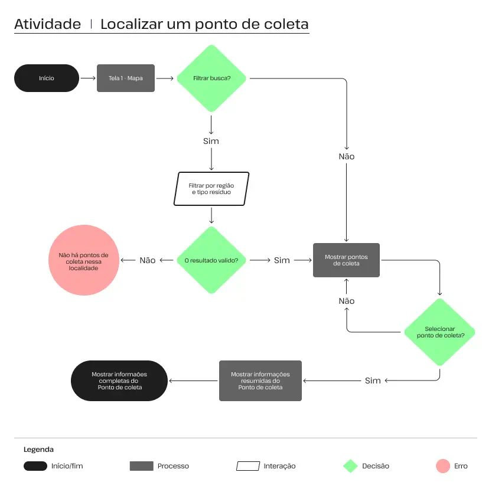
A criação do Wireframe foi uma etapa crucial para garantir que o aplicativo fosse projetado com base nas necessidades e expectativas dos usuários. Com os dados coletados em mãos, pudemos traduzir as informações em soluções visuais de forma eficiente e estratégica.
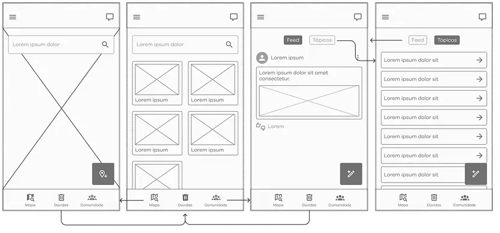
Ao criar o UI Kit, utilizamos o Moodboard como referência
visual para definir a paleta de cores, a tipografia, as formas e os elementos gráficos. Isso
garantiu que os aspectos estéticos do aplicativo refletissem a essência desejada, transmitindo
emoções e mensagens de maneira coesa e agradável.
Integrando os princípios do Material Design 3, adicionamos uma camada adicional de sofisticação e
usabilidade ao UI Kit. A utilização de elementos como elevações, ícones, botões, etc do Material
Design 3 contribuiu para uma experiência de usuário mais intuitiva e envolvente.
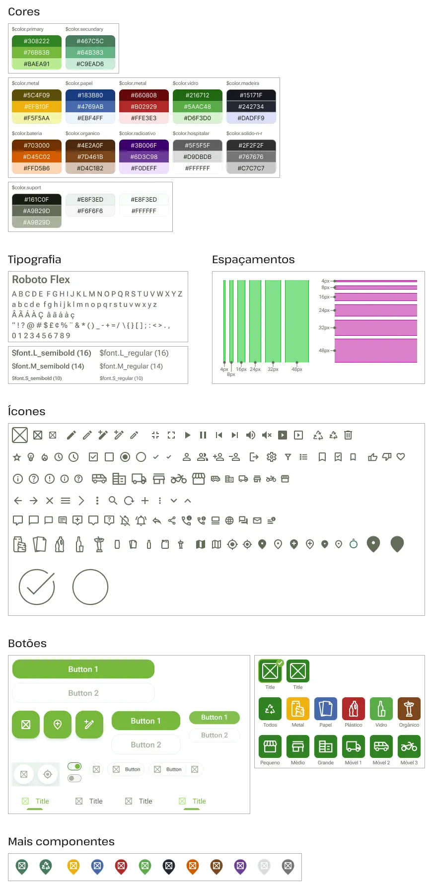
Após um meticuloso processo de pesquisa, análise e criação
de diretrizes visuais, foi dado um passo crucial na materialização do aplicativo: a criação do
design de alta fidelidade. Esse estágio representa a transformação das ideias abstratas em uma
interface concreta e interativa, onde todos os elementos visuais e interações ganham vida de forma
autêntica e envolvente.
O design de alta fidelidade foi criado com base nas diretrizes estabelecidas anteriormente, como o
Moodboard, o UI Kit e até mesmo o Material Design 3 como referência. Essas diretrizes garantiram que
cada pixel, cada cor e cada elemento da interface fossem pensados com cuidado e intenção.
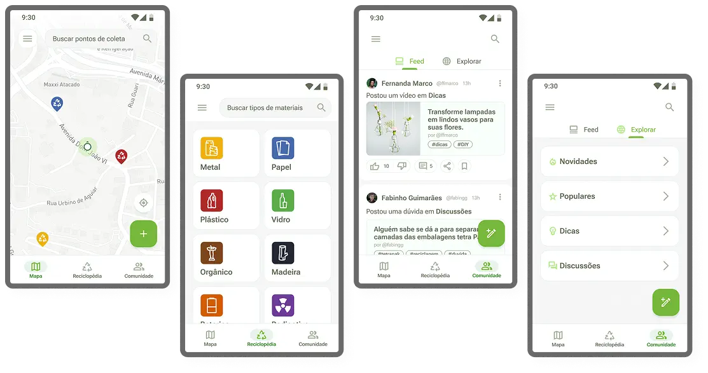
Foi realizado um teste de usabilidade para garantir que a
experiência do usuário estivesse alinhada com os objetivos e diretrizes. Esse teste, fundamental
para aprimorar o design e a funcionalidade do aplicativo, proporcionou insights valiosos sobre a
eficácia e a usabilidade da interface.
Durante o teste de usabilidade, foram convidados usuários para interagir com o aplicativo e realizar
tarefas específicas. Observamos atentamente suas ações, reações e feedbacks para identificar pontos
de dificuldade, confusão ou falhas na experiência.
Foi realizado um teste de usabilidade para garantir que a
experiência do usuário estivesse alinhada com os objetivos e diretrizes. Esse teste, fundamental
para aprimorar o design e a funcionalidade do aplicativo, proporcionou insights valiosos sobre a
eficácia e a usabilidade da interface.
Durante o teste de usabilidade, foram convidados usuários para interagir com o aplicativo e realizar
tarefas específicas. Observamos atentamente suas ações, reações e feedbacks para identificar pontos
de dificuldade, confusão ou falhas na experiência.
Com base nas observações e feedback do teste de usabilidade, a equipe está atualmente focada em realizar os ajustes necessários na interface e na experiência do usuário. Nossa prioridade é garantir que o aplicativo seja intuitivo, eficiente e agradável para os usuários, proporcionando uma experiência única e satisfatória.